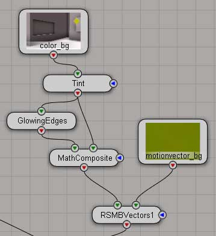

Important Notice : before loading the scenes in Softimage|XSI
you need to install lamaison's lm_2DMV mental ray shader in order to open the tutorial scenes rsmbvectors1 and 2.
Tutorial scenes :
you can load the tutorials from here
you should find the following scenes inside the tutorials database:
- rsmb.scn : using RSMB in the FXtree
- rsmbvectors[1,2].scn : using RSMBVectors for 2D motionblur
- rsmb_points.scn : using RSMB with 2D geometries
RSMBVectors scenes (rsmbvectors2.scn)
the scene has 4 passes
- color_bg : renders the background image sequence without motion blur
- motionvector_bg : renders the image sequence of the background motion vectors
- color_fg : renders the foreground image sequence without motion blur
- motionvector_fg : renders the image sequence of the foreground motion vectors
fxtree :


the fxtree in the scene shows you how to apply the 2D motion blur as a post effect on both foreground and background layer and composite them together. Because motion blur is applied as a postprocess during compositing , you can modifiy some layers in 2D before motionblur.(here with a painterly effect for example)
Workflow :
render all passes then process the output node of the fxtree
RSMB scene (rsmb.scn)
this scene shows you how to use RSMB , and RSMB with an external motion source
to blur image sequences
RSMB and 2D geometries scene (rsmb_points.scn)
you need to install lamaison's lmProjectionPlane plugin in order to open the tutorial scene rsmb_points.
this scene shows you how to use 2D geometries to help twixtor estimating the motion